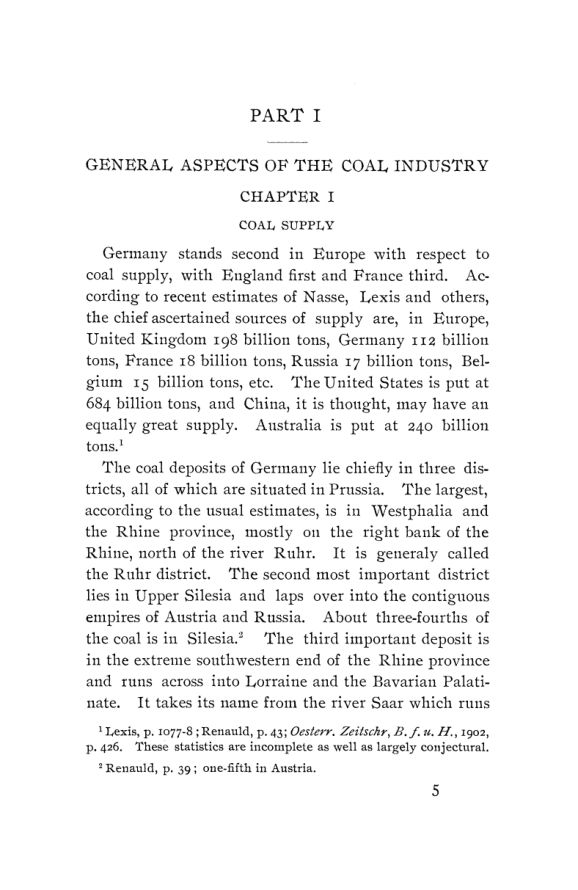

Walker, 1904: por dentro do cartel do carvão do Ruhr
Leitura: 10 min
Em 1904, Francis Walker descreveu por dentro o Sindicato Renano-Vestfaliano do Carvão: cotas, preços, exportações abaixo do preço doméstico e o que ele propunha como regulação.


Abril de 1900. A Alemanha atravessa, desde o outono anterior, uma escassez de carvão. O inverno chegou cedo e frio, a indústria está no auge, faltam vagões ferroviários, a Guerra do Transvaal atrapalha as importações inglesas e greves cortam o fornecimento da Boêmia. O sindicato do carvão do Ruhr vende a 112 a 122 marcos o vagão de 10 toneladas. Segundo a Industrie Zeitung, citada por Francis Walker, revendedores e especuladores levaram o preço a 220 a 240 marcos.
O Reichstag debateu o tema em dezembro de 1900, e a Câmara dos Deputados da Prússia criou uma comissão de inquérito em janeiro de 1901. Esse episódio é um dos pontos de partida de Monopolistic Combinations in the German Coal Industry, publicado em agosto de 1904 como o nº 3 do vol. 5 da terceira série das Publications of the American Economic Association.
No prefácio, datado de Nova York em 23 de dezembro de 1903, Walker conta que fez o estudo durante uma estada na Alemanha em 1902 e 1903. Visitou duas vezes a Vestfália e uma vez Luxemburgo, conversou com dirigentes do setor e agradece ao professor von Halle, da Universidade de Berlim, e ao diretor Dernburg, do Bank für Handel und Industrie. Usa o inquérito sobre cartéis aberto pelo governo imperial e avisa que boa parte das estatísticas vem dos próprios produtores; declara ter confiado nelas.
Por que estudar um cartel alemão?
A introdução situa o tema no centro da economia da época:
“O problema da combinação monopolista é um dos mais sérios, talvez o mais sério” (“The problem of monopolistic combination is one of the most serious, perhaps the most serious”)
Para Walker, faltam análises detalhadas, e o cartel do carvão do Reno lhe parece o melhor caso: é grande, tem rivais fora dele, alianças com outros cartéis e um registro claro de suas operações ao longo de 25 anos. Há ainda dois pontos de interesse para americanos. O fisco prussiano é ele próprio grande produtor de carvão, o que põe à prova a estatização como remédio contra o monopólio privado. E as ferrovias são estatais, de modo que os cartéis não contam com tarifas preferenciais nem descontos ocultos (rebates).
Por que os primeiros cartéis fracassaram?
O autor explica o impulso pela estrutura de custos. Numa mineração muito capitalizada, quanto maior a produção, menor o custo por tonelada. Quando os preços caem, nenhuma mina reduz a extração por conta própria: estaria entregando mercado às rivais. Cada uma produz o máximo para cobrir ao menos parte do capital que não pode retirar, e o excesso de oferta aprofunda a queda dos preços.
As tentativas de acordo se sucederam. O primeiro cartel do carvão conhecido, de 1877, previa cortar a produção em 10% durante três meses e não teve o efeito desejado. Outros vieram em 1879 e de 1880 a 1883. O de 1885, que reunia 91,52% da produção do ano anterior, com multas sobre o excesso, não conseguiu restringir a extração. No coque, o acordo de 1885 manteve preços até o fim de 1886; quando as minas de fora aproveitaram para crescer, os participantes liberaram produção e preços.
A solução veio por etapas. Em 1890 surgiu o sindicato do coque, como sociedade anônima que passou a vender todo o coque dos associados. No mesmo ano e no início de 1891 formaram-se quatro cartéis locais de carvão, em Dortmund, Bochum, Essen e Steele-Mülheim. Uma associação geral, a Gemeinschaft, criada em janeiro de 1892, dissolveu-se em setembro do mesmo ano. Em 22 de janeiro de 1893 foi fundado o Rheinisch-Westfälisches Kohlen-Syndikat, o Sindicato Renano-Vestfaliano do Carvão.
Como funcionava o sindicato?
Na forma, era uma sociedade anônima com sede em Essen e capital apenas nominal, de 900 mil marcos, cujas ações pertenciam aos donos das minas. A peça central era o contrato: cada mina se obrigava a vender toda a produção ao sindicato, com poucas exceções. Os donos das minas formavam uma assembleia com votos proporcionais à produção. Ela elegia um conselho consultivo (Beirat), que fixava os preços-norma, e uma comissão que definia a cifra de participação de cada mina, isto é, sua cota.
Toda redução de produção era aplicada proporcionalmente a todas as minas. Quem produzia acima da cota pagava uma contribuição por tonelada; quem ficava abaixo recebia compensação de igual valor. As minas recebiam sempre ao menos o preço de conta (Verrechnungspreis), derivado dos preços-norma. Como as vendas, sobretudo as exportações e as regiões disputadas com concorrentes, não cobriam esse total, o sindicato fazia um rateio mensal (Umlage) entre todos os associados. Por isso, observa Walker, ele em geral não tinha lucro nem prejuízo próprios.
O cartel conseguiu conter a produção?
Nos primeiros anos, pouco. Em 1894 o sindicato projetou reduzir a produção em 11,75% da capacidade; a redução efetiva foi de 4,98%. O relatório anual reconheceu o limite:
“o poder de restringir a produção que o sindicato possui é de caráter temporário” (“the power of restraining production possessed by the syndicate is of a temporary character”)
No auge de 1895 a 1899, as restrições foram reduzidas até quase desaparecer. Em 1899, com produção praticamente livre, as minas não chegaram à capacidade declarada, e o país enfrentou escassez de carvão. Depois da crise de 1900, o movimento se inverteu: o sindicato projetou cortes de 13,75% em 1901 e de 23% em 1902, os maiores já propostos, e passou a escoar mais carvão no exterior, em geral abaixo do preço doméstico.
Os preços subiram demais?
O sindicato começou com preços baixos, que até a ala moderada considerava insuficientes. Segundo Walker, os moderados controlaram a política de preços até 1898, quando a ala radical venceu na assembleia geral. Em 1900, já na crise, os preços-norma subiram de 1 a 1,25 marco por tonelada, e o carvão gordo (Fettförderkohle) passou de 9,10 para 10,10 marcos. O sindicato manteve essa tabela durante 1901, apesar dos protestos dos consumidores, e só a reduziu em 1902.
No coque, o episódio central foram os contratos de fusão de dois anos. A produção de 1900 já tinha sido vendida na primavera de 1899 a 14 marcos. A ala radical promoveu a substituição desses contratos por um acordo para 1900 e 1901 a 17 marcos. No mercado à vista de 1900, a média do coque de alto-forno na bolsa de Essen foi de 21,29 marcos.
Exportar barato prejudica a indústria nacional?
Era a acusação mais forte contra os sindicatos do Ruhr: ao vender carvão e coque mais barato no exterior, dariam vantagem a concorrentes estrangeiros da indústria alemã. Walker registra o argumento de Liefmann de que o problema real são os preços domésticos altos, e não os de exportação, e o considera correto no essencial. Com os dados disponíveis, conclui que o efeito sobre a indústria alemã foi exagerado pelos críticos, no caso do carvão e do coque.
Qual foi o veredito do autor?
Na conclusão, Walker sustenta que os cartéis do carvão não limitaram indevidamente a produção nem frearam o progresso técnico, mas provavelmente elevaram o custo médio ao manter vivas minas fracas e caras. Considera moderada, no conjunto, a política de preços do carvão, e extorsiva a do coque. Os preços foram mais estáveis do que seriam sob concorrência livre: subiram menos no auge e caíram mais devagar na baixa. Para ele, os cartéis não causaram a crise da siderurgia, mas provavelmente retardaram a recuperação ao não baixar os preços.
Sobre a política correta de um cartel, ele é explícito:
“Preços permanentes são um absurdo” (“Permanent prices are an absurdity”)
O preço adequado, escreve, é estável por prazos definidos e limitados, com lucro muito moderado na depressão e bom, mas não exorbitante, no auge; os contratos deveriam durar no máximo um ano. Como regulação, defende que os governos alemão e prussiano tenham informação completa sobre custos, vendas, contratos, preços internos e externos, lucros e salários. Considera inadequadas as vias penal e civil e prematuro o controle administrativo além da publicidade. A compra de minas do Ruhr pelo fisco prussiano lhe parece um experimento desejável, mais como forma de dar ao governo independência no próprio abastecimento do que como remédio contra a exploração do consumidor.
Na minha leitura
Na minha leitura, o valor do livro está na descrição do mecanismo. O sindicato não é apenas um acordo de preços: é uma central única de vendas, com cotas negociadas, compensações entre quem produz acima e abaixo da cota e um rateio que distribui entre todos o custo de vender barato fora. Esse desenho resolve o problema que derrubou os acordos anteriores, a tentação de cada mina vender por fora, mas cria outro: as cifras de participação passam a premiar capacidade declarada, e minas caras sobrevivem dentro do cartel. É exatamente o custo que o próprio autor aponta.
O segundo ponto que destaco é a distinção entre estabilidade e nível de preços. A defesa dos cartéis na época dizia que eles suavizam ciclos; os números do livro mostram que suavizam para os dois lados, inclusive quando a economia precisaria de preços de insumos mais baixos para se recuperar. E a resposta regulatória que Walker propõe começa pela informação: antes de punir ou fixar preços, o Estado precisa saber custos, vendas e contratos. O limite do método também está declarado no prefácio, já que a maior parte dos dados veio dos próprios produtores.
Glossário
- Cartel (Kartell)
- acordo entre empresas independentes para controlar produção, preços ou vendas.
- Sindicato de vendas (Syndikat)
- sociedade comum que compra toda a produção dos associados e a vende em nome deles.
- Cifra de participação (Beteiligungsziffer)
- cota de produção de cada mina, expressa em toneladas, base para dividir vendas e cortes.
- Contração
- redução percentual da produção aplicada igualmente a todas as cotas.
- Preço-norma (Richtpreis)
- preço de referência fixado pelo conselho do sindicato para cada tipo de carvão.
- Rateio (Umlage)
- cobrança mensal sobre as minas para cobrir despesas e perdas do sindicato, inclusive nas exportações.
- Fisco prussiano
- o Estado da Prússia na condição de proprietário e operador de minas.
- Hausse e baisse
- fases de alta e de baixa dos preços e dos negócios.
- Coque
- combustível obtido do carvão aquecido sem ar, usado nos altos-fornos siderúrgicos.
Fontes
- Monopolistic Combinations in the German Coal Industry (pp. 5–334). JSTOR · Internet Archive (PDF)
- Sumário da edição no JSTOR: Publications of the American Economic Association, 3ª série, vol. 5, nº 3.
Documento em domínio público (EUA, publicado antes de 1931), via JSTOR Early Journal Content e Internet Archive. Resumo e comentário do autor deste site, sem afiliação com a American Economic Association. Encontrou um erro? Escreva: a correção é publicada no próprio texto, com data.
← Nº 70 · Nova Orleans, 1903 (II): reservas, crédito, trustes e o fisco Nº 72 · Quaintance, 1904: a máquina que tirou o trabalhador do campo →